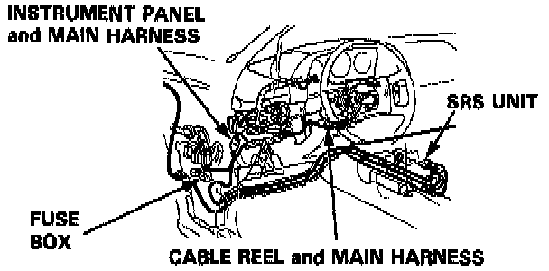
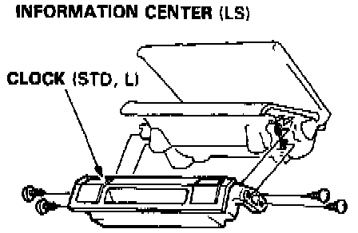
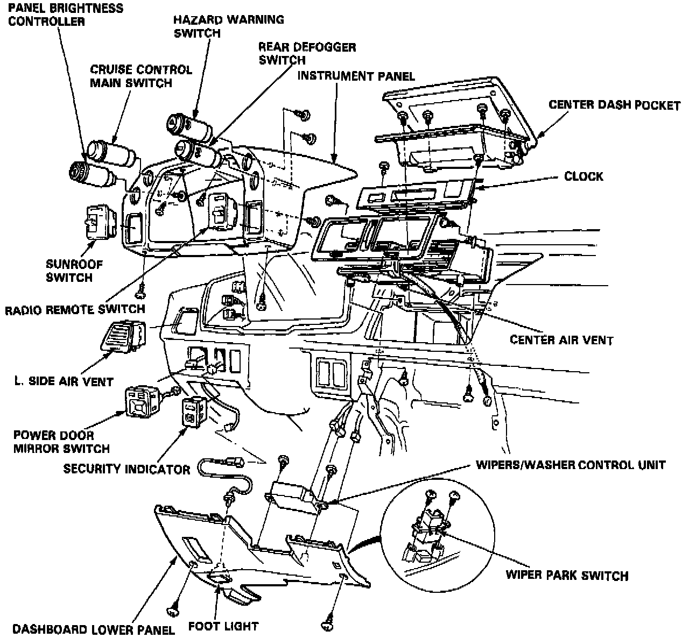
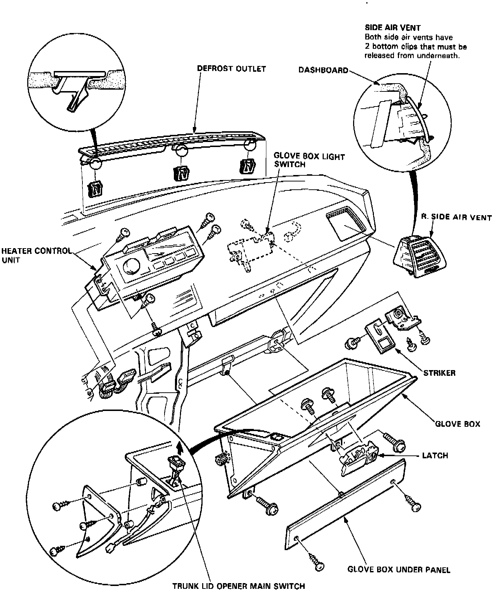

Dash Component Removal and Installation

NOTE: SRS wire harness is routed near the dashboard.
WARNING: All SRS wire harness and connectors are colored Yellow. Do not use electrical test equipment on these circuit.
CAUTION: Be careful not to damage SRS wire harness when servicing the dashboard.



Dashboard Component Removal/Installation
Refer to images for details of component removal and installation.